← 返回阅读库 · 原论文目录
论文讲解阅读文档 · 机器人学 · v096
BCO Behavioral Cloning from Observation[1805.01954]
视频时长 00:16:13；讲解文字 7,660 字符；提取讲解画面 22 张。按视频原顺序阅读，每段文字保留时间戳。
文字来自整段视频的自动语音转写，按自然停顿分段，并与 PPT / 论文页面 / 演示画面对齐。未将讲解压缩为摘要；术语、数字和口述公式请结合画面及原论文核对。 阅读稿已校正规范部分明确术语误识别；原始逐字稿和每处修改记录另行保留。
讲解画面为源视频截图（640×360），不是可编辑 PPT 文件。全片按每秒 2 帧扫描内容变化，逐步展开页保留；连续动画保留代表画面。清晰度受源视频限制。
下载完整资料包 · 含离线 HTML、PDF、Word、全部 PPT 画面和字幕。
原论文与材料
Behavioral Cloning from Observation · 下载完整 PDF（8 页）
按时间阅读
00:00:00–00:00:26 · 画面 001
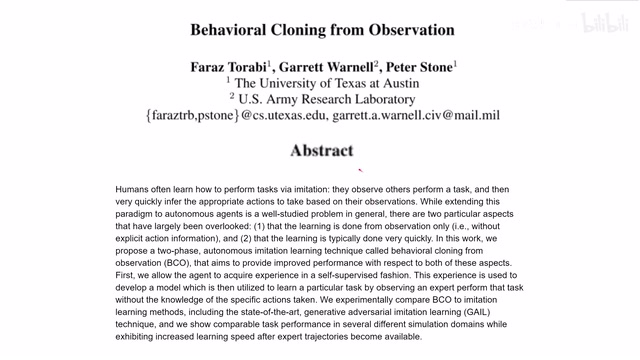
00:00:00–00:00:26 · 画面 001大家好，今天我们来介绍 Behavioral Cloning from Observation。那么这篇论文呢，也是一篇比较早的论文了，是 18 年的。本文的贡献呢，在于提出了一种我在做 Behavioral Cloning 的时候，我不再需要这个事例它提供的 action。同时呢，在这个学习完了这个 expert trajectory，在学习完这个 policy 之后呢，我们不用再和环境产生交互。
00:00:26–00:00:49 · 画面 002
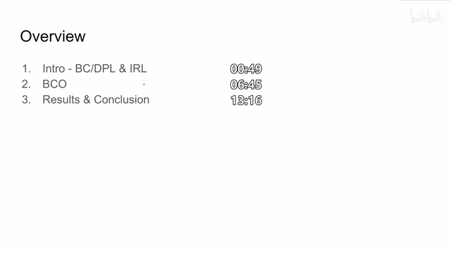
00:00:26–00:00:49 · 画面 002那么在今天的视频中呢，我们会首先介绍一下 imitation learning，以及它下面的主要的三类方法，behavioral cloningdirect policy learning 和这个 inverse reinforcement learning。然后呢，介绍本文提出的这个 bco，也就是 behavioral cloning from observation。最后呢，是作者汇报的结果，以及我们可以据此得出的结论。
00:00:49–00:02:44 · 画面 003
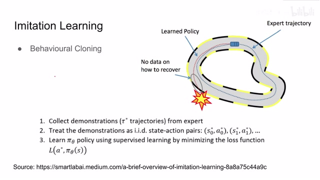
00:00:49–00:02:44 · 画面 003好的，来到 imitation learning 这个话题。我们之前在提森恩那篇论文里面，简单的提及过。但是在这个视频里面，我们会做一个更详细的一个综述。imitation learning 这个问题的定义就是，我想让我的 agent 学习一个 policy 去解决一个问题。那么在这之前，我会使用人工或者其他方法来给 agent 提供一些示例，告诉他说我应该如何操作，能够获得一个好的 policy。
然后呢，让我们的这个 agent 去学习去复课，他看到了这个 demonstration。那么 imitation learning 中的第一部分方法呢，就是 behavioral cloning。也就是说，假设我的 expert trajectory 我们的专家的事例给我们的过来呢，也是这个 state action pair 这样的形式。那么其实我就可以把这个问题定义成一个有监督的问题，我只要让我 agent 的 policy 能够在 expert trajectory 的监督之下。
来 fit 出一个 policy 使得他的运作呢跟 expert trajectory 是一样的那么这个问题呢就很好解决了但是呢正如我们在之前的视频中提到的假如说我们的这个 agent 在学习 policy 的时候哎他学到 action 呢可能跟实际的 action 有这么一点点误差那这一点点误差呢可能就导致我们进入到一个全新的 state 这个 state 呢在 expert trajectory 中没有被 cover 掉那这个时候我们的 agent 该怎么办呢那么为了解决这个问题，还是属我们熟悉的 dagger，就是我在录 expert trajectory 的时候去收集尽可能多的周围的状态。然后呢，来提供更多的更具有多样性的样本来帮助我们的 policy 进行学习。那么在这里呢，还是 behavioral cloning，它是一个有监督的 supervised 的，那么一个学习，它呢就不需要涉及一些 reward 什么之类的这些东西。
就是跟我们的 reinforcement learning 其实就是没有什么关系那么在刚刚我们提到的假如说我们的这个 agent 他不小心他因为比如说学的 policy 他不到位或者存在误差他进到一个没有见过的 state 那么这个时候应该怎么办呢那么这样呢我们就有了第二类的 imitation learning 的方法这个方法叫做 direct policy learning 那么其实这个方法呢其实比 behavioral cloning 更近一步假如说我们在学开车
00:02:44–00:04:22 · 画面 004
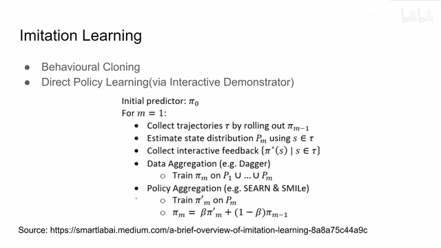
00:02:44–00:04:22 · 画面 004我们的 behavioral cloning 就是我们怎么学呢，我们是通过看老司机开车的录像来学的。当然这个开车的录像里面还包括老司机告诉你他的方向打多少，他的油门打多少。但是这毕竟只是一个录像。而对于这个 direct policy learning 来说，这个时候老司机就坐在你的副驾驶了。你上车开车的时候不仅可以回忆起老司机开车的录像同时呢假如你某个地方开到了就是原来录像中没有涵盖的地方那老司机也会告诉你在这里应该怎么开在这里应该怎么开所以说这是一个比 behavioral cloning 更强的这么一个条件它有一个 online 的或者是叫 interactive 的 demonstrator 在旁边来帮助你去学到一个好的 policy 那么当然以上这两种方法呢跟 reinforcement learning 都还没有关系
我们学到我们 agent 学到这个 policy 呢，就只能是顾客我们 demonstrator 我们的 expert 他的这个 policy 不 agent 的性能呢肯定始终不能超过他的 expert trajectory。那么有没有一种方法能够让我们 agent 学到一个更好的 policy 呢？他可以超过原来他看了他看过的这些录像呢？那么当然也是有的，这个方法呢叫做 inverse reinforcement learning。那么这里方法的意图呢就是。
00:04:22–00:06:00 · 画面 005
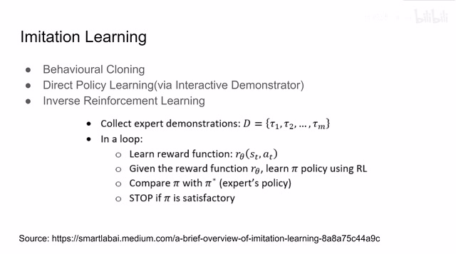
00:04:22–00:06:00 · 画面 005就是我把原来看录像的 supervised 这么一个形式变成了 reinforcement learning 的形式那 reinforcement learning 呢它就需要有 reward 可是在我们的 expert trajectory 中它一般是很难获得一个好的 reward 甚至说更多情况下是我们不知道该怎么定义一个 reward 你总不能让老司机告诉你这里方向打多少我应该得多少分这里方向打多少我应该得多少分老司机肯定不会告诉你这个那么怎么办呢我们就使用一个 network 它通过这个 state action pair 来学习到说这个 state action pair 可能会引发的 reward 是多少的 reward 那么有了这个 reward function 呢我们就可以使用 reinforcement learning 这些方法来去学一个好的 policy 然后我们对比学到这个 policy 和 expert trajectory 它 expert policy 是不是相似随着我们的迭代呢我们的 agent policy 会越来越像 expert policy
然后呢，假如说我们对这个 reward 估计的很准确的话，那只要我们继续的训练训练训练下去，那我们得到的 policy 呢，甚至可能会 outperform expert policy。但是在实际应用中呢，这种 inverse reinforcement learning 呢其实是很难训练的好的。到这里我们已经介绍了三种主要的 imitation learning 它的方法。
那么纵观这三种方法，我们在看老司机开车的录像的时候，我们不仅需要看到录像，这三种方法都要求我们知道老司机方向打了多少角度，油门踩了多少，刹车踩了多少这些 action 的信息。但是实际情况中呢，我们并不一定总能获得这个 expert action，就是老司机的操作的动作呢，我们并不是总能量化出来的。
00:06:00–00:06:53 · 画面 006
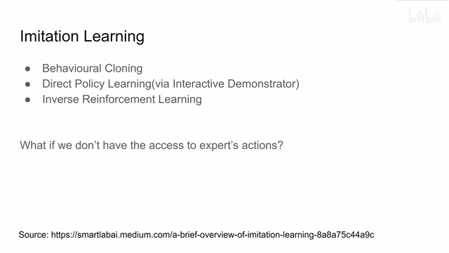
00:06:00–00:06:53 · 画面 006甚至说有的时候我们就没法量化，比如说我是人去演示手抓一个东西，对于人的 action space 来说，它就是各个肌肉各个关节的动作。而对于一个机械手，当他想去模拟这样一个动作的时候，他面对的动作空间是每一个电机的电压力矩等等这些东西。那么这个 action space 跟我们的 expert trajectory 它的 action space 都是完全不一样的，也就是在很多情况下我们并不能使用 expert action。
在这种情况下，以上的这些 imitation learning 的方法就通通失效了。那么本文呢，就是为了解决在我们学习 expert trajectory 的时候，如果没有 action，那么我们应该怎么样去学习这个 policy。那么所谓逢山开路遇水架桥，大山不向穆罕默德走来，穆罕默德便向大山走去。如果说在我们的 expert trajectory 在我们的 demonstration 中我们找不到这个 action。
00:06:53–00:08:53 · 画面 007
00:06:53–00:08:53 · 画面 007那么我们就训练一个模型去通过 state transition，就是从一个 state 到另一个 state 这个变化来学到说它应该对应什么样的 action。那么这个就是本文的核心思想。左边是本文提出的流程图，我们对照它一点一点来看。首先我们会随机产生一个 policy，那么这个 policy 是我们用来探索世界的 policy，也就是说，我通过随机的 policy 来产生一一串 action。
这个 action 呢，去和我们的世界来进行交互，通过这个交互呢，我们就能够产生很多 state action 还有 state prime，也就是从一个时刻到另一个时刻的 state transition 的这么一些样本。根据这些样本呢，我们来训练一个模型。那么这个模型呢，它的输入呢就是一个 state 到另一个 state，也就是 state transition，它的输出呢是 action。
那么很显然，在这里我们可以使用任何 supervised 的手段，因为我们在之前的 policy 中已经收集了很多 state action pair 这些 samples。那么当我们有了这样一个模型的时候，这个时候我们可以把老司机的录像拿出来了。我们把老司机的录像也拆成 state to state 这样一个 state transition 的 pair。那么我们根据 state transition pair 再加上我们这个模型就可以推断出老司机做了什么样的动作。
但实际并不一定是老司机做了什么动作，实际上是我们的 agent 要做什么样的动作，能把 state 从老司机的原始的 state 到下一个 state 这样子，我们的模型就会给出我们一个 action。那么有了这个 action 加上老司机的 demonstration state，那么它就像我们原来的 behavior cloning 一样，它又变成了一个 supervised 的问题。这个时候我们就可以使用有监督的方法来训练这个 policy，使得这个 policy 逐渐向老司机的 policy 靠拢。那么这样一个循环就结束了。
00:08:53–00:10:01 · 画面 008
00:08:53–00:10:01 · 画面 008假说我们在这个循环中做得非常好的话，我们学到的这个 policy 可能就已经非常接近老司机的 policy 了。所以我们也不需要再在环境中做任何测试，直接作为最终的 policy 就可以用了。当然，如果你对现在的 policy 还不满意，你可以继续通过这个 policy 来学习更多的样本，更多的 state action pair，这个是非常合理的，因为可能你在第一开始使用这个 random policy 的时候有些 state 你是不太好到达的。
那么现在你有了一个相对 OK 的 policy，你使用这个 policy 再去采集就会采集到一些新的 state，新的 action pair。把这些新的样本放到我们的 model 里面，它就能够更好的预测出新的 state 下面的 action。那么随后我们可以把老司机的这些 action 预测得更为准确，那么这样子就可以在一遍遍的循环中不断的提高 agent policy 它的效果。那么对比右边的算法，我们来看一下，首先我们使用随机的参数来数字化这个模型，使用随机的 policy 来出示我们的 agent 的 policy。然后呢，我们去使用这个 random policy 收集一个数据集 i pre demonstration，也就是说，在 demonstration 在我们观看老司机的录像之前，我们收集 agent 与环境交互的各个信息。这里呢，就介绍了我们怎么样收集了，我们有了一个 policy 呢，就可以知道当前的 action，然后呢，再观察到从一个 state 转换到另一个 state 这个 state transition。
00:10:01–00:10:02 · 画面 009
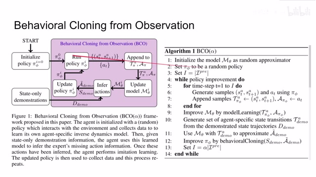
00:10:01–00:10:02 · 画面 00900:10:02–00:11:22 · 画面 010
00:10:02–00:11:22 · 画面 010那么左边的 state transition 作为 input 右边的这个 action 作为 output 或者叫 label 我们就可以用它们的组合来训练我们的这个 model 那么这显然是一个 supervised 的问题那么在训练完这个 model 之后我们就拿到老司机的录像了这个老司机的录像它是只有 state transition 也就是从 st 的 st plus one 的 state transition 它没有 action 的信息当然不要紧，我们有这个 model，有了这个 state transition，我们就可以预测出老司机的 action。那么把这个 action 和这个 state transition 组合起来，再放到我们的这个 behavior cloning 里面，也就是用它一个 supervised 的方法来去训练我们 agent 的 policy。这样子呢就可以学到一个好的 policy，而且是 supervised 方法在 behavior cloning 的方法下学到一个好的 policy。你当然可以把这个流程运行很多遍来获得一个好的结果。
00:11:22–00:13:11 · 画面 011
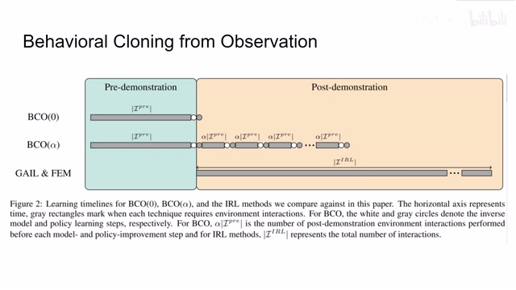
00:11:22–00:13:11 · 画面 011那么来到这个时间轴，作者向我们更直观的展示本文的算法的流程。中间的这条线呢，我们叫 demonstration，也就是 expert trajectory，老司机的录像。那么在我们观看录像之前呢，这里本文提出的方法他花了一段时间来使用自己的 policy 和环境进行交互，来对这个世界有一定的了解。那么这个白色点呢，代表了我们的 model，也就是通过 state transition 来推测出 action 的这样一个 model。
然后这个时候我们观看录像，从录像中我们使用我们的 model 推测出对应的 action，然后再使用这个 action state transition 这些东西来 supervise 我们的这个 policy。这个灰色的点也就是 supervise policy 的过程。那么这样呢就是作者提出的最基础的版本 BCO0。我们在观看录像之后呢，也不需要对环境进行交互，已经学到一个好的 policy 了。而在此基础之上呢，作者提出了 BCOα。
就是说我如果在观看录像之后我感到不满意我使用新的 policy在我们的环境中重新收集一套样本重新去更新我们的 model更新我们的对这个世界的 dynamics 的理解那么再进行一个循环我们更新自己的 model这个白色的点代表更新 model灰色的点呢代表 behavior cloning更新完 model 之后我们对老司机的录像有了新的认识我们对他的 action有了新的认识再做一次 behavior cloning就可以学到一个更好的 policy有了一个更好的 policy
再去这个环境中再走一圈再更新一下我们对世界的认识那么这样不断迭代，迭代，迭代迭代下去就能够最终学到一个好的 policy而对比之下呢像 GAIL FEM这些 imitation learning 的方法呢它都需要在看完录像之后与环境进行大量的交互操作而且呢同时它看的录像呢是需要包含 action 的到这里呢
00:13:11–00:13:13 · 画面 012
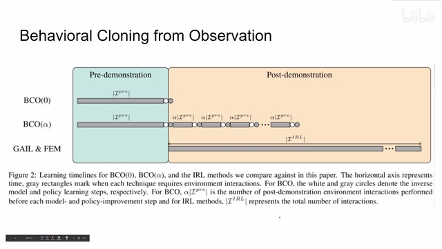
00:13:11–00:13:13 · 画面 012再说一句题外话为什么我们非常关注这个算法
00:13:13–00:13:36 · 画面 013
00:13:13–00:13:36 · 画面 013需要跟环境交互的自主因为在实际上在经济的场合中比如说我要自动驾驶我要使用工业机械币上真车的时间包括使用机械币的时间都是非常宝贵的你多运行几个 efso 呢那就是多一点的钱所以呢关注我们的 policy和环境的这个互动的次数其实是非常有意义的好的
00:13:36–00:13:52 · 画面 014
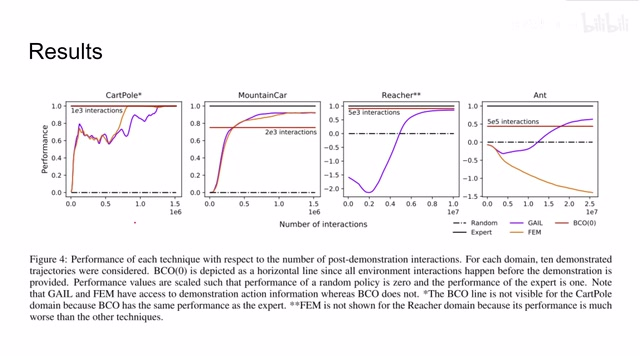
00:13:36–00:13:52 · 画面 014下面我们来看本文汇报的结果本文在 4 个环境下测试了算法的表现。因为这篇论文发布的时间很早，它当时的 benchmark 并不是很全面。但是在这些环境中我们可以看到，如果我们以 expert 得分作为 1random policy 基本就是 0。本文提出了 bco0 能与非常少的与环境的 interaction 获得一个相对可靠的结果。比如以 mountain car 为例。
00:13:52–00:13:53 · 画面 015
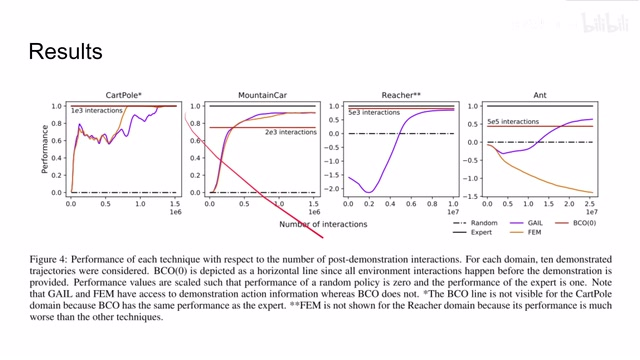
00:13:52–00:13:53 · 画面 01500:13:53–00:14:18 · 画面 016
00:13:53–00:14:18 · 画面 016那么这里，本文提出的方法只使用了 2000 多次的 interaction。那么对比像其他的 GAIL 和 FEM，它们在 2000 多的时候性能基本和 random policy 一样。所以说，本文提出方法的 sample efficiency 是非常高的。那么在这里，作者还研究了 demonstrate trajectories 的数量对于算法性能的影响，也就是老司机录像的数量。那么可以看到，本文提出的方法至少能够达到与 GAIL、FEM 相称的这么一个水平。
00:14:18–00:14:50 · 画面 017
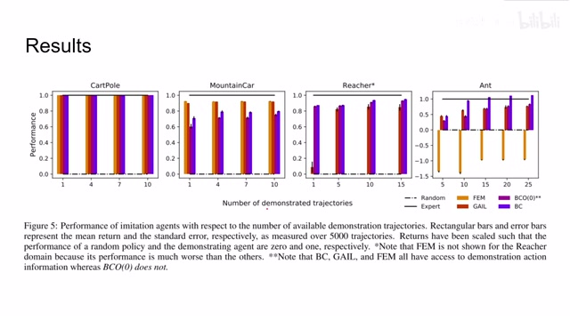
00:14:18–00:14:50 · 画面 017当然这里还是要提醒各位，因为我们的 FEM 和 GAIL 这些，还有包括 Behavioural Cloning 这些方法，它们是都能够拿到老司机的 Action 的 Expert Action，所以本文方法在没有这 Action 的信息的情况下，依然能够取得这样的表现，还是说是非常惊人的。那么最后作者还实验了，我使用不同的 Alpha 会对 Policy 的表现产生什么样的影响呢？这里的 Alpha 就是
00:14:50–00:14:56 · 画面 018
00:14:50–00:14:56 · 画面 01800:14:56–00:15:12 · 画面 019
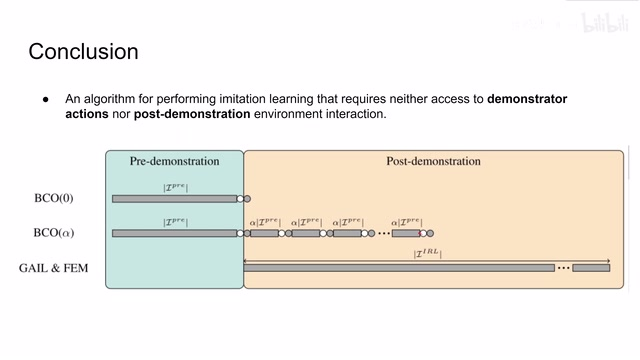
00:14:56–00:15:12 · 画面 019这里也就是我们在看完老司机的录像之后，还对环境进行了交互，不断的去学习训练这个 policy。当然也是使用 behavior cloning 的方法，没有任何 reinforcement learning 的方法在里面。可以看到当α不等于 0 的时候，特别是在 ant 这个环境下性能是有很大的提升的。好的，那么总结来说，本文提出了一种 imitation learning 的方法
00:15:12–00:15:20 · 画面 020
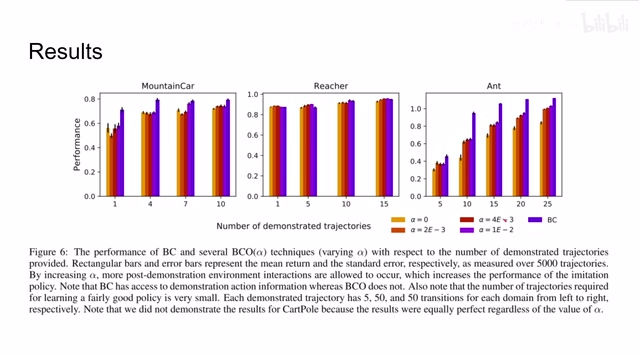
00:15:12–00:15:20 · 画面 02000:15:20–00:16:13 · 画面 021
00:15:20–00:16:13 · 画面 021它呢，既不需要 Demonstrator Actions，也就是 Expert Trajectory 中的 Action，就是老司机录像中的这些动作，也不需要 Post Demonstration，也就是我看完所有录像之后，也不需要对环境进行操作，也就是这个 BCO0 这个方法。当然我们也有和环境交互了，那么叫 BCO Alpha。那么这样的方法呢，就极大的扩展了 Imitation Learning 它的应用的可能性，而且相比于 GAIL FEM 这些方法呢对于 expert trajectory 的样本的需求更小，对于环境的交互更少。所以说，本文提出的方法是一种更有效率的方法。好的，以上就是我对这篇论文的简单分析。虽然这是一篇有一定年头的论文了，但是也是非常推荐大家去查看原文中的更多细节。那么感谢您的收看，再见
00:16:13–00:16:13 · 画面 022
00:16:13–00:16:13 · 画面 022转写与来源说明 · 1 个自动复核提示
保留 88 个原始语音片段，1 个片段触发自动复核提示。提示仅用于定位可能的术语、重复或识别问题，不等于已确认错误。
讲解画面为源视频截图（640×360），不是可编辑 PPT 文件。全片按每秒 2 帧扫描内容变化，逐步展开页保留；连续动画保留代表画面。清晰度受源视频限制。
原视频：paper/合集_2026-10-16_机器人学/[论文简析]BCO Behavioral Cloning from Observation[1805.01954].mp4
SHA-256：97827ad3775d145b1c2e1a827b8f9ca590e20ce7a569810f82c0c06d875ffaba
代表 behavior cloning
全文按视频语音与画面制作。原论文可从上方链接下载；完整资料包保留全文、原始逐字稿、字幕和校对记录。